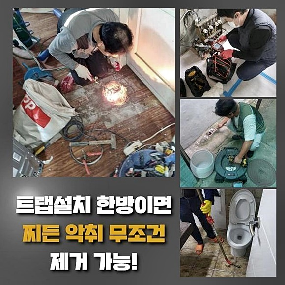
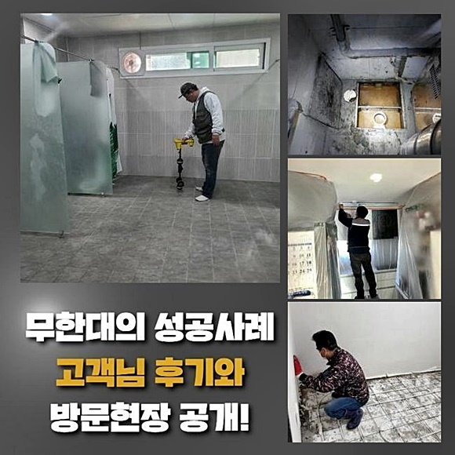
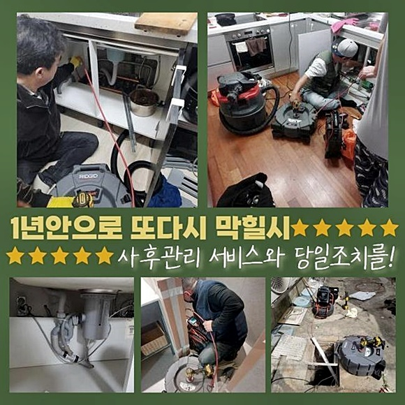
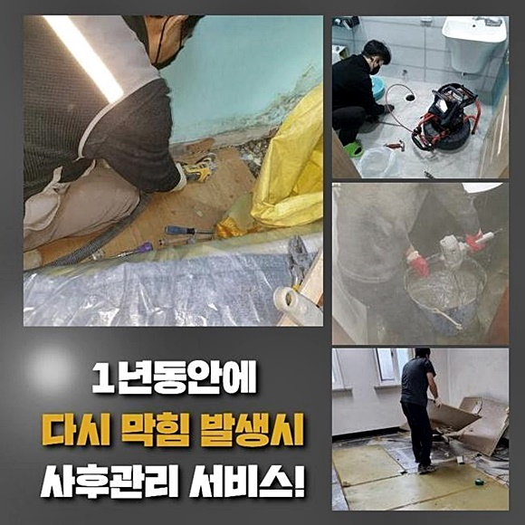
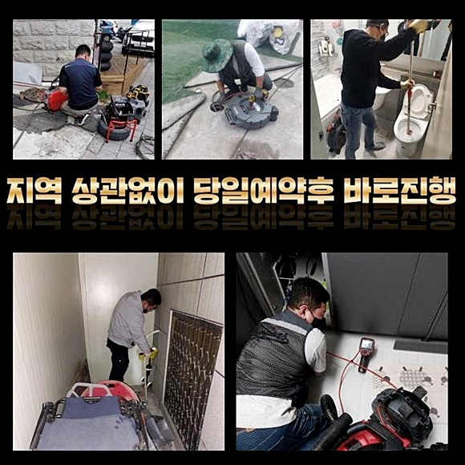
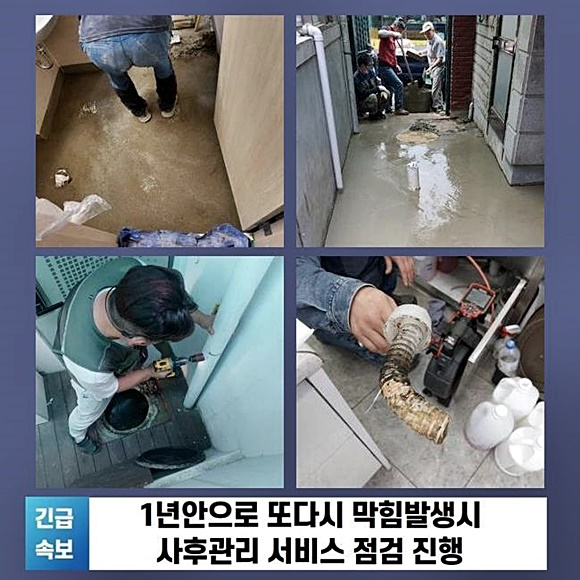
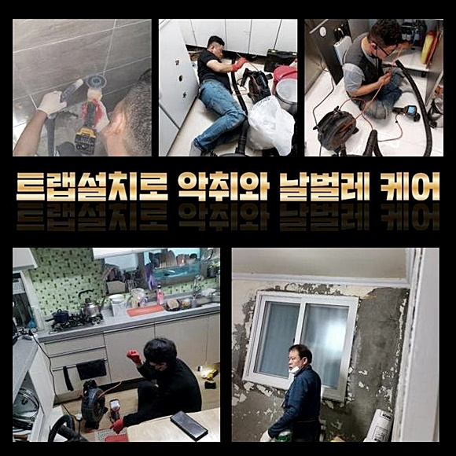

🏠 파주 산남동대변기역류 탄현면 하수구청소장비 누수탐지
파주 남동 변기막힘 전문 시공 후기

📋 작업 개요
- 위치: 파주 남동, 남동, 파주
- 서비스 유형: 변기막힘, 하수구막힘, 배관막힘, 누수수리, 역류해결, 뚫는업체, 배관청소, 고압세척, 설비공사, 악취차단
- 작업 일시: 2024. 7. 1. 21:38
- 업체명: 하수구수사대 (010-5615-2118)
🔍 문제 상황
파주 산남동대변기역류 탄현면 하수구청소장비 누수탐지
안녕하십니까 하수구에 일어난 여러 문제를 해결해드리는 사람입니다
배관은 물이 빠지는 장소입니다 또 면적이 작다는 특징이 있어요
깨끗한 물성분만 들어간다고 하면 별 트러블이 안 일어나겠으나 혹여나 이물들이 유입되면 차단된 상황을 맞이할 수 있죠
특별히 생선 뼈나 머리카락 뭉치 등의 잔재들이 들어가게 되면 파이프가 차단되곤 합니다 이럴땐 자체적으로 수리하기 난해한 상황이 대부분이죠
배관 내부는 바깥쪽에서 인식하기 힘든데요 잔재들이 쌓여 밖에 토출되지 않고서는 판단하기 어렵죠
여러 가지의 식재료를 사용하는 주방시설은 상시적인 청소가 없다면 물이 느리게 빠지거나 막힘발생이 왕왕 나타나는데요
혹여나 돼지고기에서 나온 기름성분이 모이게 되면 뜨거운 물만으로는 해결이 힘들죠
이땐 파이프청소를 제대로 이행하는 기술자를 불러 조력을 받으셔야 합니다
저희들은 갑자기 일어난 하수구 문제로 손님이 조속한 해결을 원하셔서 즉각 방문을 하였답니다
문의자분의 의뢰에 철저히 부응하여 지점에 다다르면 저희들은 풍부한 경험과 제반 설비를 이용하여 배수관을 신속히 수선하죠
일을 마치고 귀가 후에 세탁기를 사용하는 과정에서 배수공이 차단되어 문의하셨다고 했어요
고객님뿐만 아니라 많은 분께서 파이프가 차단되면 집안의 도구로 처리를 진행하려고 합니다
뚫어뻥 액상을 사용하거나 베이킹소다와 같은 것을 활용하게 되는데요 반면 배수관이 파손될 우려가 있어서 주의하셔야 하는데요

🔎 원인 분석
💡 전문가 진단: 정밀 진단 장비를 사용하여 슬러지의 고착 여부를 판명하고 타격/세척 작업을 실시했습니다.
배수관은 우리의 예상과 달리 단단하지 않아 미세한 균열이 발생하여 물이 새나갈 수 있습니다
자발적으로 통수를 해보려 계획하시다가 쉽게 수선되지 않았기에 하수관 세척을 잘 해내는 사람을 구하셨다고 했습니다
갑작스럽게 고장이 난 이유가 뭔지 진단하는 작업에 심혈을 기울여야 하죠 우린 기기들을 갖추고 트러블이 터진 처소로 이동하였어요
현장상황에 의거하여 세정 순서가 상이하고 쓰는 기계도 차이납니다
기술자라면 원인을 관찰하고 알맞은 실행능력이 있어야 한답니다
거기에 더해 본공사를 실시하기 이전에 건축물의 형태를 간파할 수 있어야 한답니다
이따금 석션기계를 1차로 활용하여 입구 주변의 이물을 처리하고 배관카메라를 통해 파이프 안을 관찰하는 케이스도 있어요
막힘이 일어난 곳을 둘러보니 수돗물이 흘러넘쳐 바닥이 젖은 걸 목도하였어요
난감해하는 고객님을 보니 굉장히 안타까운 마음이 들었어요 젖어버린 영역을 보았더니 전반적인 재시공이 필요해 보였어요 악취도 심했고요
이와 같이 스스로 처리하다가 잘 안돼 방치하게 되면 막대한 비용 사용을 유발하기도 해서 고장 즉시 조속하게 처치하는 것이 마땅합니다
배수문의 상황을 지켜보니 이물이 워낙 많아 배관카메라 투입 자체가 난해하여 우선 흡입기기로 잔재들을 세척하기로 했어요
보편적인 뚫음 기기로 관통기기가 존재하지만 물의 역류증상이 심화하면 고형물이 방해가 되어 석션설비를 활용합니다
강력한 힘을 바탕으로 세척하기 때문에 이물이 존재하는 지점에 겨냥을 제대로 해야 하죠
이 기기로 입구 부근을 해결하고 내시경cctv를 통하여 검사과정을 시행했죠
내시경기계는 파이프 내측을 생생하게 보여주는데요

🔧 작업 과정
까닭과 문제의 지점을 관찰하는데에 핵심적인 역할을 해줍니다
해당 기기가 들어가서 안쪽을 관찰해보니 큰 유분덩어리들이 단단해져 있었어요
찌꺼기들이 엉켜서 배수관 곳곳에 침체되어서 홀 크기가 점차 작아져 수돗물이 못빠지고 역류증세까지 보인거죠
주범은 기름때라고 볼 수 있었어요
하수관은 여러가지의 오수가 유입되기에 물에 잘 풀리지 않는 것들도 거두어들이는 특징이 있습니다
이런식으로 잔재들이 장시간 적층을 이루어 배수관을 차단하는 일이 빈번하게 나타납니다
청소를 할 때 트러블을 막기 위한 취지로 물흐름 진단을 하여서 정상인지 테스트를 해보시는 것을 추천해요
파이프 안에 유분 덩어리들이 채우고 있었기 때문에 전문가용 장비를 바탕으로 소멸시켜보기로 계획했습니다
분쇄 및 관통 기계들을 이용해서 배수관 소제를 실시하였죠
플렉스샤프트 기계는 파이프에 지속하여 머물던 노폐물을 분리시키고 끈끈해진 물질들을 대상으로도 쓸 수 있죠
고속 드릴을 활용해서 관통하기에 단단한 것들까지 깔끔하게 소멸시킬 수가 있는거죠
그러나 고전압으로 돌리는 것이므로 전문가가 아닌 경우 배수관을 파열을 만들 수도 있어요
이렇기에 전문적 기기를 다룰 시에는 숙련된 사람이 이끌어야 해요
샤프트기기를 통해서 이물들을 잘게 만드는 공정을 이행중입니다
다행히도 파이프의 한 영역에만 찌꺼기들이 누증된 모습이었고 주변 처소는 이상이 없었기에 상대적으로 하수관 뚫음 시공을 빨리 진행할 수 있었어요
계속하여 내시경cctv로 파이프 내측을 관찰하면서 플렉스샤프트로 빈틈없이 세정하였더니 점진적으로 청결하게 변하는 모양새가 확인되었답니다
바르게 청소되었나 점검하기 위하여 내시경cctv를 넣어서 관찰해보았죠
두루두루 자세히 보니 이전까지 배관안을 메웠던 찌꺼기들이 현재는 세척되어서 깔끔한 관 내부를 직시하게 되었어요
최후적으로 물내림에 문제가 없는지 점검에 들어갑니다
단김에 고용량을 부었는데 개운하게 사라지는 것을 알 수 있었죠
개수대 하부의 물이 넘쳤던 자리도 보아 가며 시험해 본 것인데 문제없이 제대로 소멸되는 걸 확인하고 마무리하게 되었어요
정리하면서 고객께 트러블이 없어졌다는 걸 직접적으로 보여드렸더니 만족하셨답니다
이번과 같은 공사 과정에서 목격하신 바대로 막힘으로 역류증세까지 나타나는 것 대개가 관 내측이 트러블이 난 것이 이유라 알려드릴 수 있겠습니다


✅ 작업 완료
물흐름 차단 등은 얕볼 수가 없는 장애입니다
따라서 배관막힘이 생기면 바로바로 관련업자의 조력으로 조치를 받아보셔야 합니다
이 과정에서 일상의 불편을 막아낼 수 있는겁니다
특별하게 다량의 기름으로 갑갑하게 차단되었다면 관련 기능을 가진 기술자에게 의뢰하여 파이프 안을 세척하시는 것을 부탁 드리겠습니다
금전적인 내용도 고려한 해결책이라고 단언합니다
아무때나 연락만 주신다면 재빨리 내방하도록 할게요




⚠️ 베란다 누수 및 방수 관리 방법
- ✅ 비가 많이 올 때 창틀 주변이나 아래층 천장에 얼룩이 생기는지 정기적으로 확인해 보세요.
- ✅ 우수관 주변 실리콘 마감이 들뜨거나 깨진 틈새가 있는지 손상 여부를 수시로 체크하세요.
- ✅ 베란다 바닥 타일의 줄눈(메지)이 소실되면 그 틈으로 물이 침투하여 누수가 유발됩니다.
- ✅ 누수 의심 증상 발견 시 방치하면 아래층 손실이 커지므로 즉시 전문가의 진단을 받으십시오.
💡 핵심 정리
- 확실한 장비 작업(내시경 점검 및 샤프트 스케일링)으로 원인을 뿌리 뽑습니다.
- 작업 후 1년 이내에 동일한 부위 재발 시 100% 무상 A/S 서비스를 보장합니다.
- 서울 · 경기 · 인천 전 지역에 24시간 언제든 긴급 출동할 수 있도록 항시 대기 중입니다.
❓ 자주 묻는 질문 (FAQ)
🚨 파주 남동 변기막힘 문제로 고민이신가요?
정확한 원인 진단과 확실한 시공으로 재발 없는 해결을 약속드립니다.
24시간 긴급 출동 | 서울 · 경기 · 인천 전지역 | 1년 내 재발 시 무상 A/S